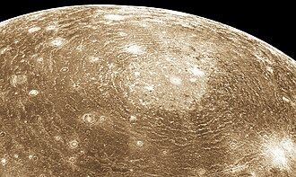

Callisto
Callisto is the second biggest of the Galilean moons that orbit the planet Jupiter.
It is named after a mythological nymph from Greek mythology.
It was discovered by Galileo Galilei in 1610, along with the other three Galilean moons - Io, Europa, and Ganymede.
The surface of Callisto is heavily cratered, covered with craters and white icy spots.
There are no tectonic, or volcanic processes on the moon.
The Galileo spacecraft has gathered data from Callisto that shows the possibility of an interior ocean.
There are ongoing and upcoming missions that will visit the Jupiter system and will make flybys or enter orbit around Callisto, namely ESA's JUICE, NASA's Europa Clipper, and CNSA's Tianwen-4.
Callisto is named after the mythological Greek figure of the same name.
She is a nymph that was a follower of Artemis, but attracted the attention of Zeus, who impregnated her while disguised as Artemis.
Callisto was then expelled from the Artemis's group, turned into a bear by Hera (or Artemis in other versions), and saved from getting killed by her hunter son by Zeus, who set her among the stars as the Ursa Major constellation.
The theme of naming the moons after Zeus's lovers was first suggested by Johannes Kepler and later adopted by Simon Marius.
The names weren't accepted initially until the discovery of the moons of Saturn.
Before that, the four Galilean moons were refered to as Jupiter I through IV in order from closest to furthest (Callisto was Jupiter IV).
In 1610 Galileo Galilei discovered four "stars" around Jupiter that he found to be moving.
He later concluded that the bodies were moving around Jupiter.
Around the same time, Simon Marius discovers the moons independently.
Orbit and rotation
Callisto orbits Jupiter at a distance of approximately 1.88 million kilometers.
It is the most distant from the four Galilean moons.
Unlike the other three, it is not in orbital resonance.
The orbital period is around 16.7 Earth days.
Callisto, just like every other round natural sattelite is tidally locked to Jupiter.
The orbital eccentricity is around 0.0074.
Callisto is the second Jovian moon by size after Ganymede.
The diameter is about 4,821 kilometers, making it slightly smaller than the planet Mercury.
The internal structure of Callisto is relatively simple compared to some of the other Galilean moons, reflecting its lack of significant geological activity.
Callisto's internal structure is believed to be partially differentiated.
The moon is thought to have a rocky core at its center, surrounded by a layer of ice and possibly a subsurface ocean.
The core is likely composed of silicates and metals, most similar to the composition of L/LL ordinary chondrites.
Surrounding this core is a thick mantle of mostly water ice and some other substances like silicates, carbon dioxide, sulfur dioxide, ammonia and some organic compounds near the surface.
Beneath the surface Callisto may contain a liquid water ocean, just like the other icy moons of Jupiter - Ganymede and Europa.

Valhalla crater and its concentric rings
Callisto has a low albedo of 20%.
This means that the surface is very dark.
The icy crust is heavily cratered and provides a record of the moon's lack of geological activity.
The largest and most prominent feature on Callisto is the Valhalla impact basin, which spans about 1,900 kilometers in diameter and is surrounded by a series of concentric rings.
This massive impact structure is the largest multi-ring crater in the Solar System.
Another similar in structure crater is Asgard, which is 1,400 km in diameter.
Newer impact craters can be distinguished by their brighter appearance, examples of which are Burr and Lofn.
In addition to Valhalla, Callisto's surface is covered with numerous smaller craters, many of which are partially filled with ice, giving them a smooth, rounded appearance.
Callisto has a very tenuous atmosphere composed of carbon dioxide and potentially oxygen, although it has only been theorized and not directly detected.
Atomic hydrogen has also been detected.
Callisto has no magnetic field of its own.
The radiation levels are much lower than those on the other, much closer to Jupiter Galilean moons, equivalent to 0.1 mSv per day.
They are still higher than those on Earth.
Several missions have visited Jupiter and it's moons, including Callisto.
In 1973 and 1974, Pioneer 10 and 11 respectively performed flybys of Jupiter without much new data for the satellites.
Later in 1979 Voyager 1 and 2 imaged more than half of the Callistoan surface with a resolution of 1–2 km, and precisely measured its properties.
Galileo, which was a dedicated Jupiter orbiter, performed eight close flybys of Callisto, completing the global imaging at a greater resolution.
Cassini and New Horizons, on their ways beyond the orbits of Jupiter, gathered infrared specra of Callisto and the other Galilean moons.
Juno, the second Jupiter orbietr mission, hasn't studied Callisto like the other three so far.
The first dedicated mission to the Galilean moons is JUICE (Jupiter Icy Moons Explorer) by the ESA.
It launched in 2023 and is expected to reach and orbit Jupiter in 2031.
A similar mission by NASA, launched the following year, is Europa Clipper, which will perform fast flybys of Europa, including nine close to Callisto.
CNSA's Tianwen 4 is expected to enter Callisto orbit after orbiting Jupiter.
External links
{% include catnatural-satellites.html %}